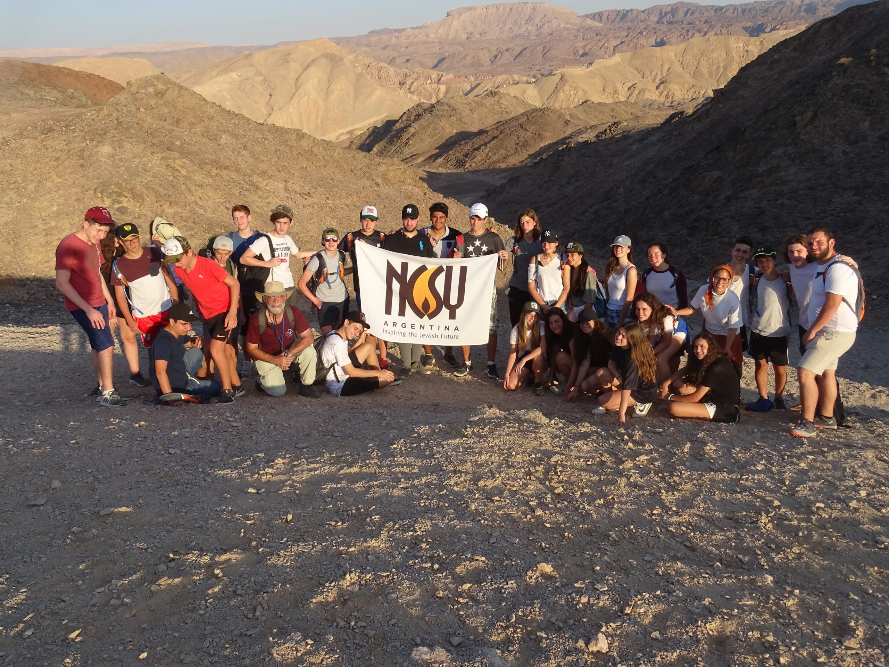

Nueva york

Nueva York es más que una ciudad. Es un mundo entero condensado en una misma geografía. Y para un joven judío, recorrer Nueva York con Aieka es una experiencia única para ver el judaísmo desde una perspectiva global, diversa y llena de vitalidad. En este viaje nos sumergimos en una comunidad vibrante donde las sinagogas, las escuelas, las instituciones y los movimientos judíos conviven en todas sus expresiones: ortodoxos, conservadores, reformistas, seculares, culturales. Es un laboratorio vivo de pluralismo y compromiso, donde cada joven puede verse reflejado, cuestionado e inspirado. Visitamos el Museo del Holocausto, el barrio de Crown Heights, las librerías judías, las yeshivot, los centros comunitarios, las calles del Lower East Side donde los inmigrantes dejaron su huella. Cada paso es una historia, una pregunta, una posibilidad. También compartimos Shabat en comunidad, participamos de charlas con rabinos, emprendedores, artistas y activistas que muestran cómo el judaísmo se expresa y se construye en el presente. Nueva York nos obliga a mirar el judaísmo con otros ojos. A entender que hay múltiples formas de vivirlo, pero que todas nos conectan con la misma esencia: el compromiso con el otro, con el conocimiento, con la transmisión. Aieka en Nueva York es, sobre todo, una invitación a pensar el liderazgo desde la acción, desde la empatía, desde el lugar que cada uno puede ocupar en el mundo judío.
España
El viaje de Aieka a España es una travesía que conecta el alma con las raíces más profundas de nuestro pueblo. En cada calle, cada sinagoga antigua, cada barrio judío silencioso, se esconde una historia que nos pertenece, un eco de voces que una vez florecieron en una de las comunidades judías más ricas y sabias de la historia. Recorrer España con Aieka no es simplemente hacer turismo: es caminar por los pasillos de la memoria. En Toledo, Córdoba, Sevilla o Granada, descubrimos el esplendor del judaísmo sefardí, la erudición de los sabios, la poesía de Yehudá HaLeví, la profundidad de Maimónides, la arquitectura majestuosa de las sinagogas y los patios andaluces que aún susurran espiritualidad. Pero también nos encontramos con el dolor del exilio, con la Inquisición, con los lugares de silencio. Y desde allí, desde esa emoción tan humana, surge el diálogo con la historia, la reflexión sobre la identidad, y la conexión entre generaciones. Porque entender de dónde venimos nos permite valorar más intensamente hacia dónde vamos. A través de talleres, momentos de tefilá, dinámicas de grupo y espacios de expresión personal, este viaje se convierte en un puente entre pasado y presente. Los jóvenes descubren que la historia judía no está escrita en libros lejanos, sino que vive en cada piedra, en cada rincón, en cada mirada compartida. Y así, Aieka en España no solo educa: transforma.
Israel
Viajar a Israel con Aieka no es simplemente tomar un avión, aterrizar en otro continente y conocer un nuevo país. Es, ante todo, un viaje hacia el interior. Una experiencia que toca el alma, que despierta preguntas, que reordena emociones. Es volver a casa, incluso si es la primera vez que se pone un pie en esa tierra. Porque Israel, para el pueblo judío, no es solo geografía: es memoria, es destino, es promesa cumplida y esperanza eterna. Desde el momento en que el grupo aterriza en Ben Gurión, algo cambia. El aire se siente distinto, el idioma vibra familiar, y los símbolos que siempre estuvieron en libros, canciones y rezos cobran vida. De repente, el Muro de los Lamentos ya no es solo una imagen: es una experiencia. Las piedras de Jerusalem cuentan historias. Las calles de Tel Aviv laten al ritmo de un judaísmo moderno, vibrante, creativo. Y el desierto, inmenso y silencioso, recuerda de dónde venimos, y hacia dónde podemos volver. El viaje de Aieka a Israel está diseñado para ir más allá del turismo. Nos proponemos conectar con las raíces, pero también con las ramas del judaísmo contemporáneo. Visitamos sitios históricos como Massada, Yad Vashem, el Kotel y el Monte Herzl, pero también nos encontramos con líderes comunitarios, soldados jóvenes que eligen servir con orgullo, innovadores tecnológicos, artistas, rabinos y emprendedores sociales que construyen cada día el Israel del presente. Cada jornada está cargada de sentido: desde una tefilá al amanecer frente al Kineret, hasta un debate encendido en un mirador sobre la identidad y el compromiso. Desde una caminata en Ein Gedi, hasta una velada de Shabat que une voces, lágrimas y cantos bajo las estrellas. Porque en Israel no solo se aprende con la mente: se aprende con el cuerpo, con el corazón, con la historia y con el ahora. Pero quizás lo más fuerte no está en los paisajes, ni en las fotos, ni siquiera en los encuentros externos. Lo más transformador del viaje sucede en el interior de cada participante. Ver a un chico o una chica emocionarse por escuchar su propio nombre en hebreo escrito en un cartel. Sentir el peso de una carta personal colocada en las grietas del Muro. Reír, llorar, abrazar, reflexionar. Redescubrirse parte de algo más grande, de una historia que lleva miles de años y que hoy también se escribe con su nombre. Aieka en Israel es un despertar. Es entender que el judaísmo no es solo una tradición que heredamos, sino una identidad que elegimos. Es sembrar vínculos para toda la vida, es fortalecer la comunidad, es volver con preguntas más importantes que las que uno se llevó. Y es también, para muchos, la primera vez que sienten que tienen un lugar propio en la historia de su pueblo. Porque después de pisar Israel, uno ya no mira el mapa igual. Porque después de rezar en Jerusalem, el rezo tiene otro peso. Porque después de compartir el alma en comunidad, uno se lleva un compromiso nuevo. Y es que, en el fondo, eso es Aieka: no un viaje de egresados. Un viaje hacia el sentido.